सरकार का वह अंग जो विधायिका द्वारा बनाए गए कानूनों और नीतियों को लागू करता है तथा शासन का दैनिक संचालन करता है, उसे कार्यपालिका (Executive) कहते हैं।
- व्यापक परिभाषा: कार्यपालिका में केवल राष्ट्रपति, प्रधानमंत्री और मंत्री ही शामिल नहीं होते, बल्कि इसमें संपूर्ण प्रशासनिक ढांचा (सिविल सेवक, पुलिस और प्रशासनिक अधिकारी) शामिल होता है।
- राजनीतिक कार्यपालिका (Political Executive): सरकार के वे प्रमुख (जैसे प्रधानमंत्री, मुख्यमंत्री और मंत्री) जो एक निश्चित समय (जैसे 5 वर्ष) के लिए जनता द्वारा चुने जाते हैं और नीतिगत फैसले लेते हैं।
- स्थायी कार्यपालिका (Permanent Executive): लोक सेवक या सिविल कर्मचारी (IAS, IPS आदि) जो स्थायी रूप से सेवानिवृत्ति की आयु तक पद पर रहते हैं और नीतियों के क्रियान्वयन में निरंतरता और तकनीकी दक्षता प्रदान करते हैं।
- मुख्य कार्य: देश में कानून-व्यवस्था बनाए रखना, राष्ट्रीय सुरक्षा, सामाजिक-आर्थिक नीतियों को लागू करना, और बजट का निष्पादन।
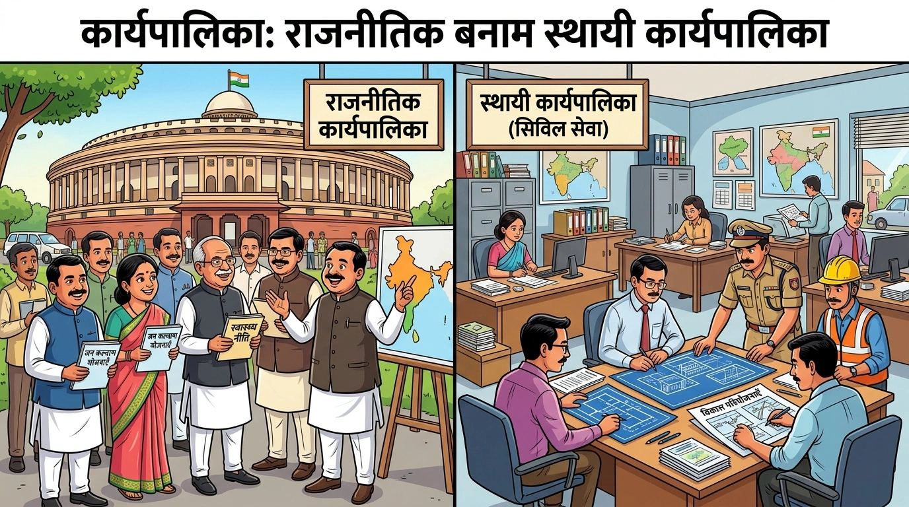
🎨 शिक्षण कार्ड 1: कार्यपालिका क्या है? राजनीतिक बनाम स्थायी कार्यपालिका
मुख्य बिंदु: राजनीतिक कार्यपालिका (प्रधानमंत्री व मंत्री) 5 वर्ष के लिए चुनी जाती है और नीतिगत निर्णय लेती है, जबकि स्थायी कार्यपालिका (सिविल सेवा/IAS) प्रशासनिक क्रियान्वयन निरंतर बनाए रखती है।
विश्व के विभिन्न लोकतांत्रिक देशों में कार्यपालिका की मुख्य रूप से तीन प्रणालियाँ पाई जाती हैं:
- 1. अध्यक्षात्मक व्यवस्था (Presidential System):
- विशेषताएं: राष्ट्रपति राज्य (State) और सरकार (Government) दोनों का प्रत्यक्ष प्रमुख होता है। राष्ट्रपति का चुनाव जनता द्वारा सीधे या निर्वाचक मंडल द्वारा निश्चित अवधि के लिए होता है। वह विधायिका के प्रति जवाबदेह नहीं होता।
- उदाहरण: संयुक्त राज्य अमेरिका, ब्राजील और लैटिन अमेरिकी देश।
- 2. संसदीय व्यवस्था (Parliamentary System):
- विशेषताएं: प्रधानमंत्री सरकार का वास्तविक प्रमुख (Head of Government) होता है, जबकि राष्ट्रपति या राजा राज्य का नाममात्र/संवैधानिक प्रमुख (Head of State) होता है। प्रधानमंत्री और उनका मंत्रिमंडल विधायिका (संसद) के प्रति उत्तरदायी होता है।
- उदाहरण: भारत, ब्रिटेन, जर्मनी, कनाडा, जापान।
- 3. अर्ध-अध्यक्षात्मक व्यवस्था (Semi-Presidential System):
- विशेषताएं: इसमें राष्ट्रपति और प्रधानमंत्री दोनों होते हैं। राष्ट्रपति के पास दैनिक शासन में महत्वपूर्ण कार्यकारी शक्तियां होती हैं, जबकि प्रधानमंत्री और मंत्रिमंडल संसद के प्रति जवाबदेह होते हैं।
- उदाहरण & केस स्टडी: फ्रांस और श्रीलंका। श्रीलंका के 1978 के संविधान के तहत राष्ट्रपति के पास व्यापक शक्तियां हैं और वह प्रधानमंत्री को बर्खास्त कर सकता है।
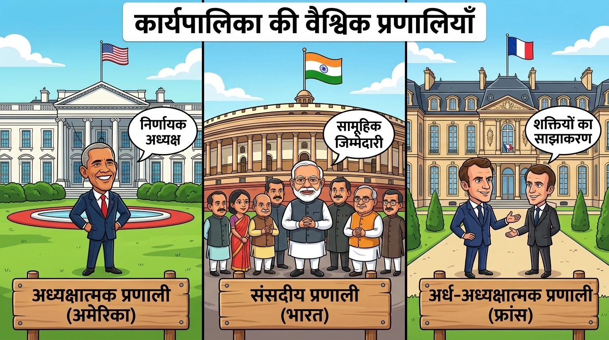
🎨 शिक्षण कार्ड 2: कार्यपालिका की वैश्विक प्रणालियाँ (अध्यक्षात्मक, संसदीय व अर्ध-अध्यक्षात्मक)
मुख्य बिंदु: अध्यक्षात्मक व्यवस्था (अमेरिका) में राष्ट्रपति प्रत्यक्ष प्रमुख होता है, संसदीय व्यवस्था (भारत) में प्रधानमंत्री संसद के प्रति जवाबदेह होता है, और अर्ध-अध्यक्षात्मक (फ्रांस) में दोनों शक्तियाँ साझा करते हैं।
1947 में स्वतंत्रता के पश्चात भारत के संविधान निर्माताओं ने अध्यक्षात्मक प्रणाली के बजाय संसदीय प्रणाली को अपनाने का निर्णय लिया। इसके मुख्य कारण निम्नलिखित हैं:
- 1. ऐतिहासिक पूर्व अनुभव: 1919 और 1935 के भारत सरकार अधिनियमों के तहत भारतीय नेता संसदीय प्रणाली के संचालन से अच्छी तरह परिचित हो चुके थे।
- 2. उत्तरदायी और नियंत्रित सरकार की इच्छा: संविधान निर्माता ऐसी कार्यपालिका चाहते थे जो जनता और विधायिका के प्रति निरंतर उत्तरदायी हो। अध्यक्षात्मक प्रणाली में राष्ट्रपति पर विधायिका का नियंत्रण कम होता है, जिससे व्यक्ति-पूजा और तानाशाही का खतरा रहता है।
- 3. विविधता का समावेश: संसदीय प्रणाली में देश के विभिन्न क्षेत्रों, जातियों, धर्मों और भाषाई समूहों के प्रतिनिधियों को मंत्रिपरिषद में स्थान मिलना आसान होता है।
- 4. टकराव से बचाव: संसदीय व्यवस्था में कार्यपालिका और विधायिका के बीच सहयोग बना रहता है, जिससे गतिरोध (Deadlock) की संभावना कम होती है।
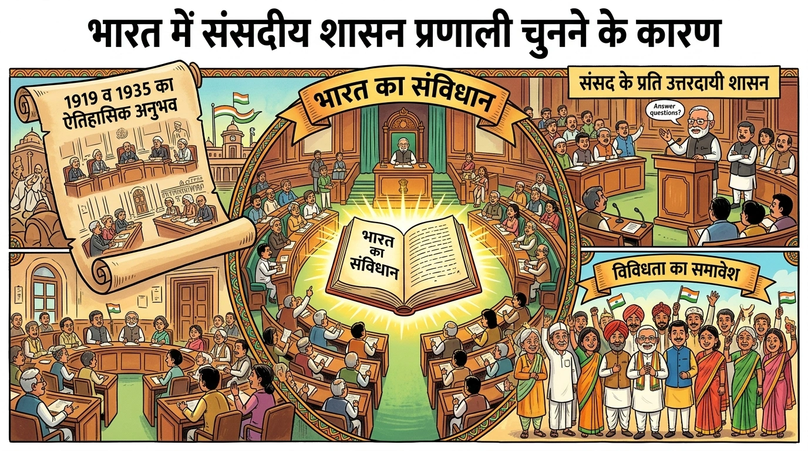
🎨 शिक्षण कार्ड 3: भारत द्वारा संसदीय शासन प्रणाली चुनने के ऐतिहासिक कारण
मुख्य बिंदु: 1919 व 1935 के अधिनियमों का ऐतिहासिक अनुभव, उत्तरदायी शासन की चाह, तानाशाही से बचाव और भारत की सामाजिक विविधता को मंत्रिपरिषद में उचित स्थान देना।
भारत का राष्ट्रपति (President of India) भारतीय संघ का प्रथम नागरिक और राज्य का औपचारिक/संवैधानिक प्रमुख (Formal Head of State) होता है।
- अप्रत्यक्ष निर्वाचन (Indirect Election): राष्ट्रपति का चुनाव जनता सीधे नहीं करती, बल्कि एक निर्वाचक मंडल (Electoral College) द्वारा होता है।
- निर्वाचक मंडल की संरचना (अनुच्छेद 54):
- संसद के दोनों सदनों (लोकसभा और राज्यसभा) के केवल निर्वाचित सदस्य।
- राज्य विधानसभाओं के केवल निर्वाचित सदस्य।
- केंद्र शासित प्रदेशों (दिल्ली, पुडुचेरी, जम्मू-कश्मीर) की विधानसभाओं के निर्वाचित सदस्य।
- अनुपातिक प्रतिनिधित्व एवं एकल संक्रमणीय मत (STV): चुनाव गुप्त मतदान द्वारा अनुपातिक प्रतिनिधित्व प्रणाली के अनुसार एकल संक्रमणीय मत द्वारा होता है।
- महाभियोग प्रक्रिया (Impeachment - Article 61): राष्ट्रपति को उनके 5 वर्ष के कार्यकाल से पूर्व केवल 'संविधान का अतिक्रमण' (Violation of the Constitution) करने पर संसद के दोनों सदनों द्वारा 2/3 विशेष बहुमत से महाभियोग प्रस्ताव पारित कर हटाया जा सकता है।
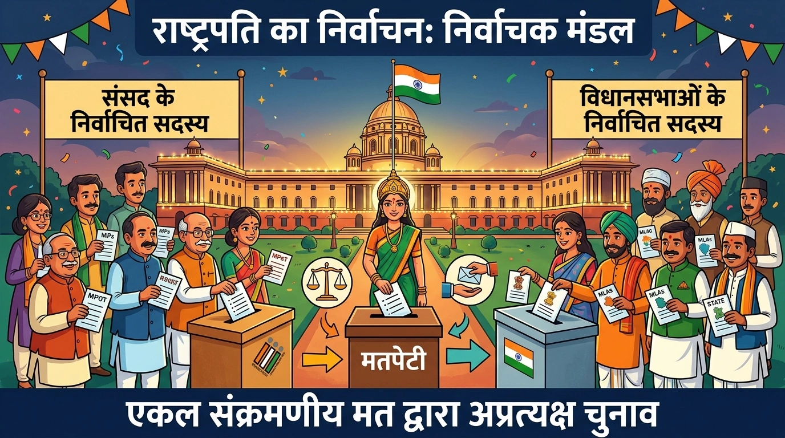
🎨 शिक्षण कार्ड 4: भारत का राष्ट्रपति: निर्वाचक मंडल व चुनाव प्रक्रिया
मुख्य बिंदु: राष्ट्रपति का चुनाव संसद (लोकसभा + राज्यसभा) और राज्यों की विधानसभाओं के केवल 'निर्वाचित सदस्यों' द्वारा आनुपातिक प्रतिनिधित्व प्रणाली (STV) से अप्रत्यक्ष होता है।
⚡ लाइव इंटरैक्टिव सिमुलेटर
भारत का राष्ट्रपति चुनाव: संपूर्ण डिजिटल सिमुलेटर
सांसदों व विधायकों के मत-मूल्य की लाइव संवैधानिक गणना, हरा व गुलाबी गुप्त मतपत्र, एकल संक्रमणीय मत (STV) तथा 1969 व 2022 के ऐतिहासिक मतगणना राउंड्स का सजीव अनुभव करें।
🚀 राष्ट्रपति चुनाव सिमुलेटर खोलें (Open Simulator)
संविधान द्वारा राष्ट्रपति को व्यापक शक्तियां प्रदान की गई हैं, जिनका प्रयोग वे मंत्रिपरिषद की सलाह से करते हैं:
- 1. कार्यकारी शक्तियां (Executive Powers): भारत सरकार के सभी शासन संबंधी कार्य राष्ट्रपति के नाम से किए जाते हैं। वे प्रधानमंत्री, अन्य मंत्रियों, राज्यपालों, महान्यायवादी (Attorney General) और CAG की नियुक्ति करते हैं।
- 2. विधायी शक्तियां (Legislative Powers): संसद का सत्र बुलाना, सत्रावसान करना, लोकसभा को भंग करना, और संसद द्वारा पारित विधेयकों पर हस्ताक्षर कर कानून बनाना। संसद के सत्र में न होने पर अध्यादेश (Ordinance - Article 123) जारी करना।
- 3. वित्तीय शक्तियां (Financial Powers): धन विधेयक (Money Bill) राष्ट्रपति की पूर्व अनुमति से ही लोकसभा में पेश किया जाता है।
- 4. न्यायिक शक्तियां (Judicial Powers): अनुच्छेद 72 के तहत राष्ट्रपति को किसी भी अपराधी की सजा को क्षमा (Pardon), कम (Commute) या स्थगित करने का अधिकार है।
- 5. आपातकालीन शक्तियां (Emergency Powers): राष्ट्रीय आपातकाल (अनुच्छेद 352), राष्ट्रपति शासन (अनुच्छेद 356), और वित्तीय आपातकाल (अनुच्छेद 360) लागू करना।
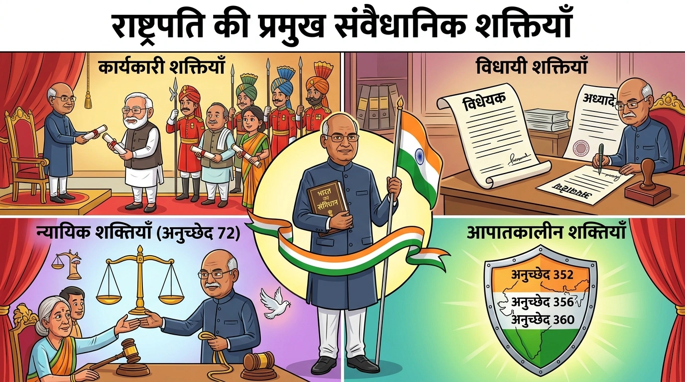
🎨 शिक्षण कार्ड 5: राष्ट्रपति की प्रमुख संवैधानिक शक्तियाँ (कार्यकारी, विधायी, न्यायिक, आपातकालीन)
मुख्य बिंदु: कार्यकारी नियुक्तियाँ, संसद में विधेयकों व अध्यादेश (अनुच्छेद 123) पर हस्ताक्षर, अनुच्छेद 72 के तहत क्षमादान तथा अनुच्छेद 352, 356 व 360 के अंतर्गत आपातकालीन शक्तियाँ।
अनुच्छेद 74 के अनुसार राष्ट्रपति मंत्रिपरिषद की सलाह मानने के लिए बाध्य हैं, परंतु व्यावहारिक रूप से तीन परिस्थितियों में राष्ट्रपति अपने स्वविवेक (Discretion) का प्रयोग कर सकते हैं:
- 1. सलाह को पुनर्विचार हेतु लौटाना: राष्ट्रपति मंत्रिपरिषद द्वारा भेजी गई किसी सलाह या विधेयक को एक बार पुनर्विचार (Reconsideration) के लिए वापस भेज सकते हैं। यदि मंत्रिपरिषद वही सलाह दोबारा भेजे, तो राष्ट्रपति उसे मानने के लिए बाध्य हैं।
- 2. वीटो शक्ति का प्रयोग (Veto Power): संसद द्वारा पारित विधेयक को राष्ट्रपति रोक सकते हैं या उस पर कोई निर्णय न लेकर अनिश्चित काल के लिए लंबित रख सकते हैं। इसे पॉकेट वीटो (Pocket Veto) कहते हैं।
- ज्ञानी जैल सिंह पॉकेट वीटो केस (1986): राष्ट्रपति ज्ञानी जैल सिंह ने 1986 में संसद द्वारा पारित 'भारतीय डाकघर संशोधन विधेयक' पर न तो हस्ताक्षर किए और न ही इसे अस्वीकार किया, बल्कि पॉकेट वीटो का प्रयोग कर विधेयक को रोक दिया।
- 3. प्रधानमंत्री की नियुक्ति में स्वविवेक: जब किसी चुनाव के बाद किसी भी राजनीतिक दल या गठबंधन को लोकसभा में स्पष्ट बहुमत न मिले (त्रिशंकु लोकसभा), तब राष्ट्रपति स्वविवेक से तय करते हैं कि किसे सरकार बनाने के लिए आमंत्रित किया जाए।
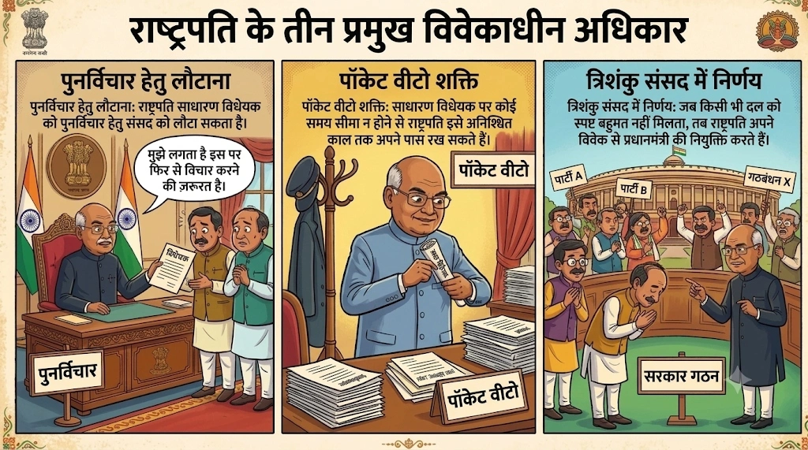
🎨 शिक्षण कार्ड 6: राष्ट्रपति के विवेकाधीन अधिकार व पॉकेट वीटो
मुख्य बिंदु: मंत्रिपरिषद की सलाह को एक बार पुनर्विचार हेतु लौटाना, विधेयकों पर अनिश्चितकालीन पॉकेट वीटो (1986 ज्ञानी जैल सिंह डाक विधेयक केस), और त्रिशंकु संसद में सरकार गठन हेतु स्वविवेक।
भारत का उपराष्ट्रपति (Vice-President of India) देश का द्वितीय सर्वोच्च संवैधानिक पद है।
- निर्वाचन प्रक्रिया: उपराष्ट्रपति का चुनाव संसद के दोनों सदनों (लोकसभा और राज्यसभा) के सभी सदस्यों (निर्वाचित + मनोनीत) से बने निर्वाचक मंडल द्वारा आनुपातिक प्रतिनिधित्व प्रणाली (STV) से होता है। कार्यकाल 5 वर्ष का होता है।
- पदेन सभापति (Ex-officio Chairman): उपराष्ट्रपति राज्यसभा के पदेन सभापति के रूप में कार्य करते हैं और सदन की कार्यवाहियों का संचालन करते हैं।
- कार्यवाहक राष्ट्रपति: यदि राष्ट्रपति का पद मृत्यु, त्यागपत्र या महाभियोग के कारण रिक्त हो जाए, तो उपराष्ट्रपति अधिकतम 6 महीने के लिए कार्यवाहक राष्ट्रपति के रूप में कार्य करते हैं। इस दौरान वे राज्यसभा के सभापति का कार्य नहीं करते।
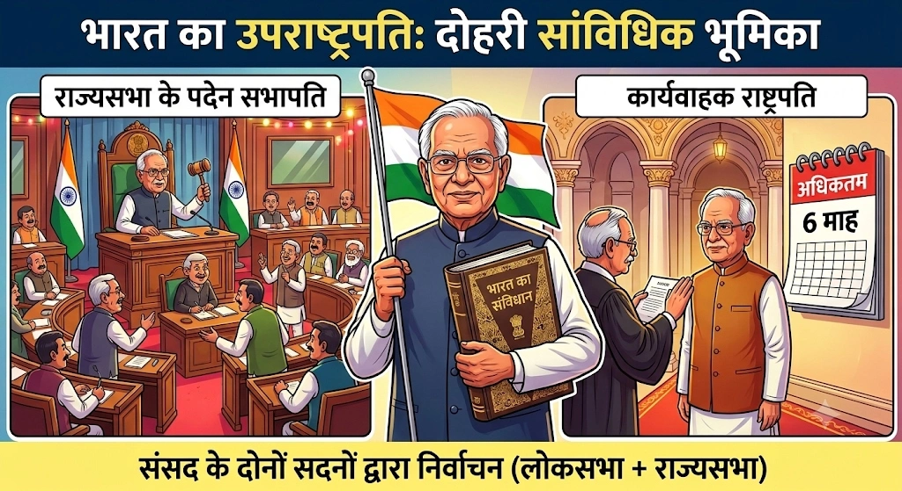
🎨 शिक्षण कार्ड 7: भारत का उपराष्ट्रपति: पद, चुनाव और संवैधानिक भूमिका
मुख्य बिंदु: राज्यसभा के पदेन सभापति के रूप में सदन का संचालन तथा राष्ट्रपति का पद रिक्त होने पर अधिकतम 6 माह के लिए कार्यवाहक राष्ट्रपति की भूमिका निभाना।
भारतीय संविधान में राष्ट्रपति राज्य का संवैधानिक प्रमुख है, जबकि प्रधानमंत्री (Prime Minister) सरकार का वास्तविक प्रमुख (Real Executive Head) और देश का सबसे शक्तिशाली राजनीतिक पद है।
प्रधानमंत्री के प्रमुख कार्य और शक्तियाँ (Functions & Powers of PM):
- 1. मंत्रिपरिषद का गठन व फेरबदल: प्रधानमंत्री की सिफारिश पर ही राष्ट्रपति अन्य मंत्रियों की नियुक्ति करते हैं। मंत्रियों के विभागों का आवंटन (Portfolio Allocation) करना तथा किसी भी मंत्री का विभाग बदलना या उससे त्यागपत्र मांगना।
- 2. मंत्रिमंडल (कैबिनेट) की बैठकों की अध्यक्षता: मंत्रिपरिषद और कैबिनेट की बैठकों का एजेंडा तय करना, अध्यक्षता करना और सरकार के अंतिम नीतिगत निर्णयों की दिशा निर्धारित करना।
- 3. राष्ट्रपति और मंत्रिमंडल के बीच कड़ी (अनुच्छेद 78): प्रशासन और प्रस्तावित विधेयकों से जुड़े सभी फैसलों की जानकारी राष्ट्रपति तक पहुँचाना तथा राष्ट्रपति द्वारा मांगी गई प्रशासनिक जानकारी उपलब्ध कराना।
- 4. संसद का नेतृत्व: प्रधानमंत्री लोकसभा का नेता होता है। वह संसद के पटल पर सरकार की मुख्य नीतियों की घोषणा करता है और राष्ट्रपति को लोकसभा भंग करने की सलाह दे सकता है।
- 5. देश की विदेश नीति का संचालन: अंतरराष्ट्रीय मंचों (G20, BRICS, संयुक्त राष्ट्र) पर भारत का प्रतिनिधित्व करना तथा वैश्विक संबंधों को दिशा देना।
- 6. नीति आयोग व विभिन्न परिषदों के अध्यक्ष: प्रधानमंत्री 'नीति आयोग' (NITI Aayog), राष्ट्रीय एकता परिषद और अंतर्राज्यीय परिषद के पदेन अध्यक्ष होते हैं।
- 7. आपातकाल व राष्ट्रीय संकट में देश का नेता: युद्ध, महामारी या प्राकृतिक आपदा के समय राष्ट्र का मार्गदर्शन करना और त्वरित निर्णय लेना।
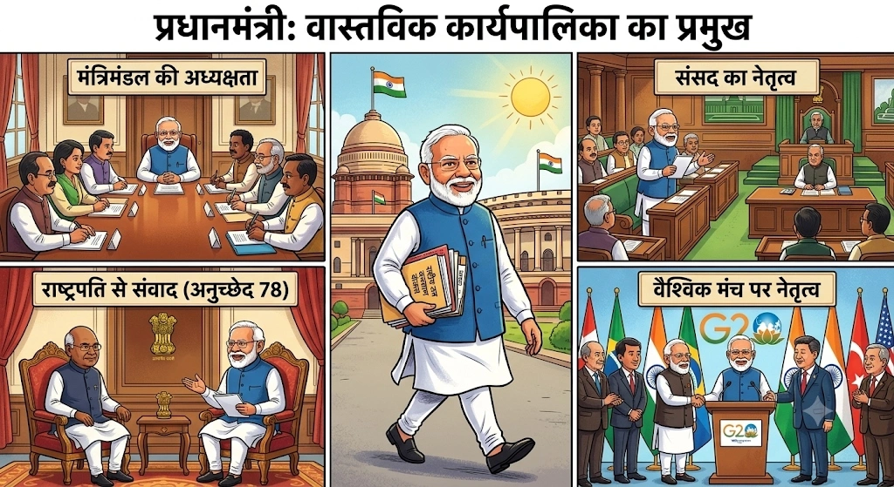
🎨 शिक्षण कार्ड 8: प्रधानमंत्री: वास्तविक कार्यपालिका का प्रमुख और देश का नेता
मुख्य बिंदु: मंत्रिपरिषद का गठन व विभागों का आवंटन, कैबिनेट बैठकों की अध्यक्षता, संसद का नेतृत्व तथा राष्ट्रपति व मंत्रिमंडल के मध्य संवैधानिक सेतु (अनुच्छेद 78)।
भारतीय राजनीतिक व्यवस्था में प्रधानमंत्री की शक्ति के कई स्रोत हैं, जो उन्हें शक्तिशाली बनाते हैं:
- मंत्रिपरिषद पर पूर्ण नियंत्रण: किसी भी मंत्री को पद से हटाने या त्यागपत्र मांगने का अधिकार। यदि प्रधानमंत्री त्यागपत्र दे दें या उनकी मृत्यु हो जाए, तो पूरी मंत्रिपरिषद स्वयं भंग हो जाती है।
- संसद का नेतृत्व: लोकसभा को भंग करने की सिफारिश राष्ट्रपति से करना।
- मीडिया और जनता से सीधा संपर्क: राष्ट्रीय संकट के समय देश का नेतृत्व करना और वैश्विक मंचों पर भारत का प्रतिनिधित्व करना।
- गठबंधन राजनीति की सीमाएं: जब देश में गठबंधन सरकारें बनती हैं, तो प्रधानमंत्री की शक्तियां कुछ हद तक सहयोगी दलों की सहमति पर निर्भर हो जाती हैं।
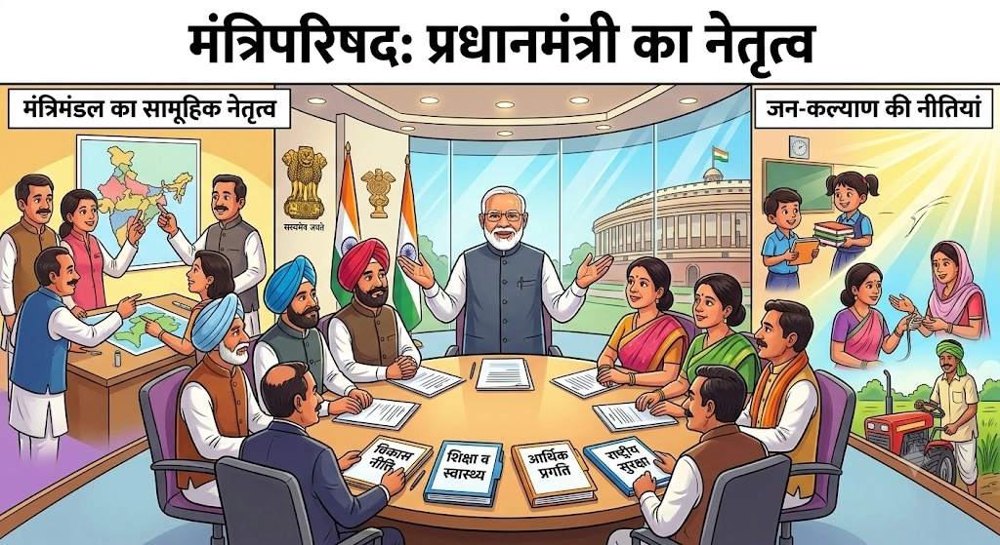
🎨 शिक्षण कार्ड 9: मंत्रिपरिषद और शक्ति का केंद्र: प्रधानमंत्री का वर्चस्व
मुख्य बिंदु: प्रधानमंत्री मंत्रिपरिषद के केंद्रबिंदु हैं; उनके त्यागपत्र या मृत्यु से पूरी सरकार भंग हो जाती है। गठबंधन राजनीति में सहयोगी दलों के साथ समन्वय आवश्यक होता है।
संसदीय शासन प्रणाली का सबसे महत्वपूर्ण आधार सामूहिक उत्तरदायित्व का सिद्धांत (Principle of Collective Responsibility) है।
- एक साथ तैरते हैं और एक साथ डूबते हैं: अनुच्छेद 75(3) के अनुसार मंत्रिपरिषद सामूहिक रूप से लोकसभा के प्रति उत्तरदायी होती है। इसका अर्थ है कि यदि किसी एक मंत्री के खिलाफ भी लोकसभा में अविश्वास प्रस्ताव (No-Confidence Motion) पारित हो जाता है, तो पूरी सरकार (समस्त मंत्रिपरिषद) को त्यागपत्र देना पड़ता है।
- मंत्रिमंडल की एकजुटता: कैबिनेट की बैठक में किसी मुद्दे पर मतभेद हो सकते हैं, परंतु एक बार फैसला होने के बाद सभी मंत्रियों को सार्वजनिक रूप से उस निर्णय का समर्थन करना अनिवार्य है। यदि कोई मंत्री असहमत है, तो उसे पद से त्यागपत्र देना पड़ता है (जैसे डॉ. बी.आर. अंबेडकर और चिंतामन देशमुख का त्यागपत्र)।
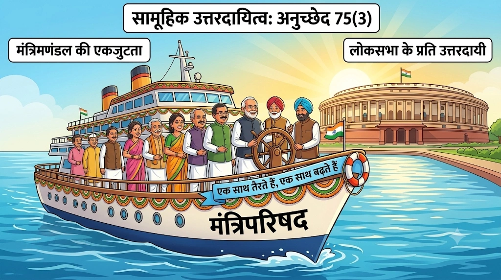
🎨 शिक्षण कार्ड 10: सामूहिक उत्तरदायित्व (Collective Responsibility) का सिद्धांत
मुख्य बिंदु: अनुच्छेद 75(3) के अनुसार पूरी मंत्रिपरिषद सामूहिक रूप से लोकसभा के प्रति उत्तरदायी है; यदि एक मंत्री के खिलाफ भी अविश्वास प्रस्ताव पारित हो जाए तो पूरी सरकार को त्यागपत्र देना होता है।
अतीत में राजनीतिक लाभ और असंतुष्ट विधायकों को खुश करने के लिए विशालकाय मंत्रिपरिषद बनाई जाती थी, जिससे सरकारी खजाने पर भारी बोझ पड़ता था।
91वाँ संविधान संशोधन अधिनियम, 2003
- 15% की सीमा (15% Limit): इसके द्वारा अनुच्छेद 75(1A) जोड़ा गया, जिसके अनुसार प्रधानमंत्री सहित मंत्रिपरिषद के सदस्यों की कुल संख्या लोकसभा की कुल सदस्य संख्या के 15 प्रतिशत से अधिक नहीं हो सकती।
- राज्य विधानसभाओं में लागू: राज्यों में भी मुख्यमंत्री सहित मंत्रिपरिषद की कुल संख्या राज्य विधानसभा की कुल संख्या के 15% से अधिक नहीं हो सकती (लेकिन कम से कम 12 मंत्री होना अनिवार्य है)।
- दलबदल पर रोक: दलबदल करने वाले सदस्यों को मंत्री पद पाने से अयोग्य घोषित किया गया।
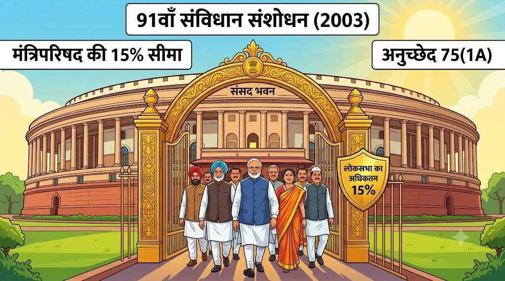
🎨 शिक्षण कार्ड 11: मंत्रिपरिषद का आकार और 91वाँ संविधान संशोधन (2003)
मुख्य बिंदु: अनुच्छेद 75(1A) के तहत मंत्रिपरिषद का कुल आकार लोकसभा की कुल सदस्य संख्या के 15% से अधिक नहीं हो सकता (राज्यों में भी 15% सीमा, न्यूनतम 12 मंत्री)।
संविधान राष्ट्रपति और प्रधानमंत्री के मध्य संबंधों को स्पष्ट रूप से परिभाषित करता है:
- अनुच्छेद 74: राष्ट्रपति को सहायता और सलाह देने के लिए एक मंत्रिपरिषद होगी जिसका प्रमुख प्रधानमंत्री होगा। राष्ट्रपति मंत्रिपरिषद की सलाह के अनुसार कार्य करेंगे। (42वें संशोधन द्वारा सलाह बाध्यकारी बनाई गई, 44वें संशोधन द्वारा 1 बार पुनर्विचार का अधिकार मिला)।
- अनुच्छेद 78 (प्रधानमंत्री के कर्तव्य):
- 1. संघ के प्रशासन और विधान संबंधी सभी निर्णयों की जानकारी राष्ट्रपति को देना।
- 2. राष्ट्रपति द्वारा प्रशासन या कानून से जुड़ी कोई भी जानकारी मांगे जाने पर उसे उपलब्ध कराना।
- 3. यदि किसी मंत्री ने व्यक्तिगत निर्णय लिया हो, तो राष्ट्रपति के कहने पर उस मामले को मंत्रिपरिषद के सामने विचार हेतु रखना।
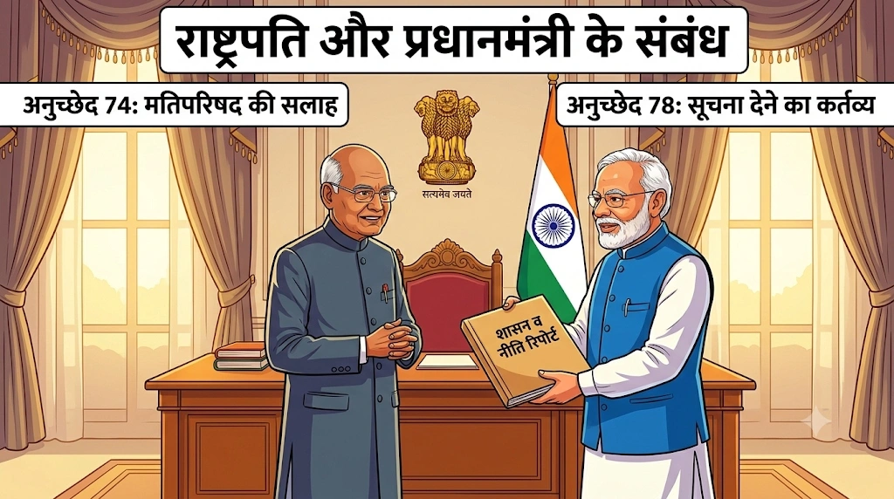
🎨 शिक्षण कार्ड 12: राष्ट्रपति और प्रधानमंत्री के बीच संवैधानिक संबंध (अनुच्छेद 74 व 78)
मुख्य बिंदु: अनुच्छेद 74 के तहत राष्ट्रपति मंत्रिपरिषद की सलाह पर कार्य करते हैं, तथा अनुच्छेद 78 के तहत प्रधानमंत्री का कर्तव्य है कि वे प्रशासन व विधायी प्रस्तावों की जानकारी राष्ट्रपति को दें।
शासन की नीतियों को लागू करने और प्रशासनिक कार्यों को चलाने वाले वेतनभोगी अधिकारियों के तंत्र को नौकरशाही या सिविल सेवा (Civil Services) कहते हैं।
- विशेषताएं:
- योग्यता के आधार पर चयन: खुली प्रतियोगी परीक्षाओं द्वारा निष्पक्ष चयन।
- राजनीतिक तटस्थता (Political Neutrality): सिविल सेवकों को किसी राजनीतिक दल से जुड़े बिना निष्पक्ष रूप से काम करना होता है। सरकारें बदलती रहती हैं, परंतु नौकरशाही अपनी निष्पक्षता बनाए रखती है।
- अनामिकता का सिद्धांत (Anonymity): मंत्रियों की नीतियों की सफलता या विफलता की जिम्मेदारी संसद में मंत्रियों की होती है, पर्दे के पीछे रहकर काम करने वाले सिविल सेवकों की नहीं।
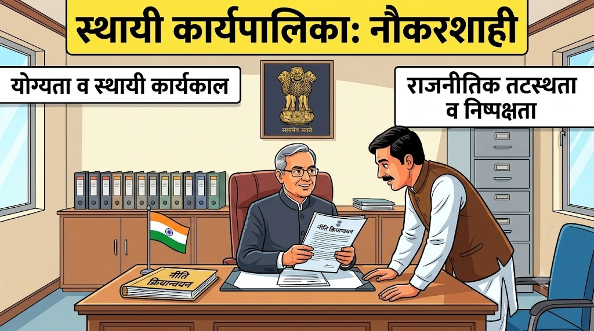
🎨 शिक्षण कार्ड 13: स्थायी कार्यपालिका: भारत में नौकरशाही (Bureaucracy) का ढांचा
मुख्य बिंदु: खुली प्रतियोगी परीक्षा द्वारा योग्यता आधारित निष्पक्ष चयन, सरकारों के बदलने पर भी राजनीतिक तटस्थता, और संसद के समक्ष अनामिकता का सिद्धांत।
भारत में सिविल सेवाओं का त्रिस्तरीय वर्गीकरण किया गया है जो संघवाद और प्रशासनिक दक्षता का संतुलन बनाता है:
भारतीय सिविल सेवाओं का वर्गीकरण
- 1. अखिल भारतीय सेवाएं (All India Services): भारतीय प्रशासनिक सेवा (IAS) और भारतीय पुलिस सेवा (IPS)। इनकी भर्ती केंद्र सरकार (UPSC) करती है, परंतु वे राज्यों में तैनात होते हैं और राज्य तथा केंद्र दोनों के अधीन काम कर सकते हैं।
- 2. केंद्रीय सेवाएं (Central Services): भारतीय विदेश सेवा (IFS), भारतीय राजस्व सेवा (IRS), और भारतीय डाक सेवा। ये केवल केंद्र सरकार के मंत्रालयों और विदेशों (दूतावासों) में काम करते हैं।
- 3. राज्य सेवाएं (State Services): प्रांतीय सिविल सेवा (PCS), राज्य पुलिस सेवा (SPS)। इनकी भर्ती राज्य लोक सेवा आयोग (SPSC) करता है और ये केवल संबंधित राज्य में सेवा देते हैं।
संघ लोक सेवा आयोग (UPSC) & SPSC: अनुच्छेद 315 के तहत निष्पक्ष चयन हेतु स्वतंत्र संवैधानिक आयोग गठित हैं। इसके अलावा संविधान में SC, ST, OBC और महिलाओं के लिए आरक्षण का प्रावधान है ताकि प्रशासनिक सेवा सामाजिक रूप से समावेशी बने।
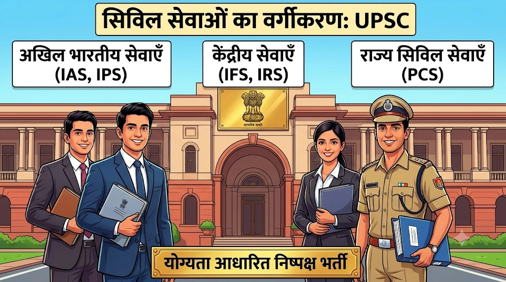
🎨 शिक्षण कार्ड 14: भारतीय सिविल सेवाओं का त्रिस्तरीय वर्गीकरण (UPSC व SPSC)
मुख्य बिंदु: अखिल भारतीय सेवाएं (IAS, IPS - केंद्र व राज्य दोनों में), केंद्रीय सेवाएं (IFS, IRS - केवल केंद्र/विदेश में), और राज्य सेवाएं (PCS, SPS - संबंधित राज्य में)।
एक जीवंत लोकतंत्र में कार्यपालिका की असीमित शक्ति पर अंकुश लगाना और उसकी जवाबदेही तय करना अत्यंत आवश्यक है।
- संसदीय नियंत्रण: संसद प्रश्न काल, ध्यानाकर्षण प्रस्ताव, और बजट चर्चाओं द्वारा मंत्रियों और उनके विभागों पर नियंत्रण रखती है।
- नागरिकों के प्रति जवाबदेही: सूचना का अधिकार (RTI Act 2005), सिटीजन चार्टर, और ई-गवर्नेंस से नौकरशाही में पारदर्शिता और जन-सेवा की भावना बढ़ी है।
- नौकरशाही की चुनौतियाँ: लालफीताशाही (Red Tapism), भ्रष्टाचार, और राजनीतिक दबाव में काम करने की प्रवृत्ति को दूर करने के लिए द्वितीय प्रशासनिक सुधार आयोग (2nd ARC) की सिफारिशों को लागू करना आवश्यक है।
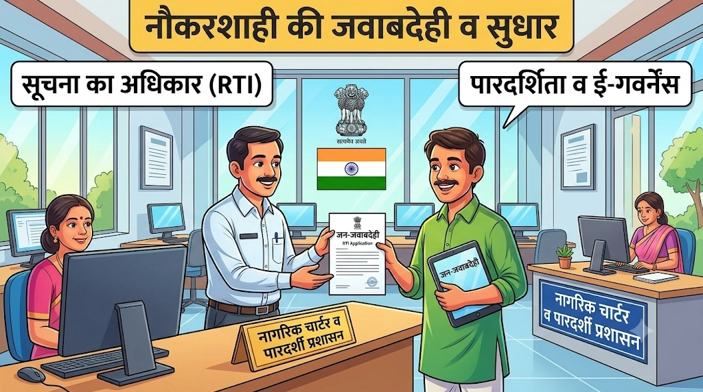
🎨 शिक्षण कार्ड 15: नौकरशाही की जवाबदेही, लोकतंत्र और प्रशासनिक सुधार
मुख्य बिंदु: संसदीय नियंत्रण, सूचना का अधिकार (RTI Act 2005), ई-गवर्नेंस, सिटीजन चार्टर और लालफीताशाही समाप्त करने हेतु द्वितीय प्रशासनिक सुधार आयोग (2nd ARC) के सुझाव।
भारतीय संविधान के अनुच्छेद 61 में राष्ट्रपति को उनके पद से हटाने के लिए एक विशिष्ट और कठोर प्रक्रिया दी गई है जिसे महाभियोग (Impeachment) कहा जाता है।
- एकमात्र आधार: राष्ट्रपति पर महाभियोग केवल "संविधान के उल्लंघन" (Violation of the Constitution) के आधार पर ही लगाया जा सकता है।
- प्रक्रिया की शुरुआत: महाभियोग का प्रस्ताव संसद के किसी भी सदन (लोकसभा या राज्यसभा) में लाया जा सकता है। इसके लिए उस सदन के कम से कम 1/4 (एक-चौथाई) सदस्यों के हस्ताक्षर और 14 दिन की पूर्व लिखित सूचना अनिवार्य है।
- विशेष बहुमत (2/3 कुल संख्या): आरोप लगाने वाले सदन की कुल सदस्य संख्या के कम से कम 2/3 बहुमत से प्रस्ताव पारित होना आवश्यक है।
- अर्ध-न्यायिक जांच व पदमुक्ति: दूसरा सदन इन आरोपों की जांच करता है। जांच के दौरान राष्ट्रपति को स्वयं उपस्थित होने या अपने प्रतिनिधि द्वारा पक्ष रखने का पूर्ण अधिकार होता है। यदि दूसरा सदन भी कुल सदस्य संख्या के 2/3 बहुमत से आरोप को सही ठहरा देता है, तो राष्ट्रपति उसी दिन से पदमुक्त माने जाते हैं।
- नोट: स्वतंत्र भारत के इतिहास में आज तक किसी भी राष्ट्रपति पर महाभियोग नहीं लगाया गया है।
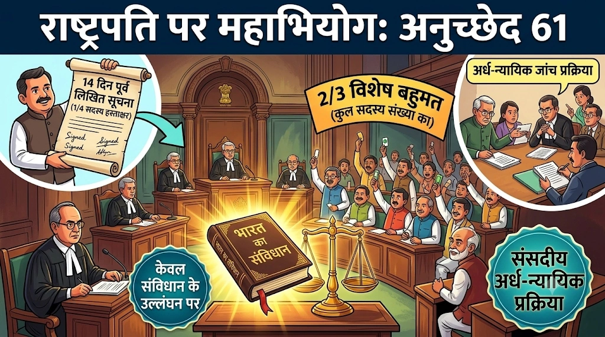
🎨 शिक्षण कार्ड 16: राष्ट्रपति पर महाभियोग प्रक्रिया (अनुच्छेद 61)
मुख्य बिंदु: केवल संविधान के उल्लंघन पर महाभियोग संभव, 14 दिन पूर्व 1/4 सदस्यों की सूचना, दोनों सदनों में कुल संख्या के 2/3 विशेष बहुमत से पारित होना अनिवार्य (अर्ध-न्यायिक प्रक्रिया)।
भारतीय संविधान के भाग 18 में राष्ट्रपति को देश की संप्रभुता, एकता और अखंडता की सुरक्षा हेतु तीन प्रकार की आपातकालीन शक्तियाँ प्रदान की गई हैं:
- 1. राष्ट्रीय आपातकाल (अनुच्छेद 352):
- आधार: युद्ध, बाह्य आक्रमण अथवा सशस्त्र विद्रोह (44वें संशोधन 1978 द्वारा 'आंतरिक अशांति' की जगह 'सशस्त्र विद्रोह' शब्द जोड़ा गया)।
- शर्त: यह केवल केंद्रीय मंत्रिमंडल की लिखित सिफारिश पर ही घोषित किया जा सकता है और 1 माह के भीतर संसद के दोनों सदनों द्वारा विशेष बहुमत से अनुमोदित होना आवश्यक है।
- 2. राज्य में संवैधानिक तंत्र की विफलता / राष्ट्रपति शासन (अनुच्छेद 356):
- आधार: यदि राज्यपाल की रिपोर्ट या अन्य आधार पर राष्ट्रपति संतुष्ट हों कि राज्य सरकार संविधान के अनुसार नहीं चल पा रही है।
- प्रभाव: राज्य की मंत्रिपरिषद बर्खास्त कर दी जाती है और राज्य की विधायी शक्तियां संसद को प्राप्त हो जाती हैं (एस.आर. बोम्मई केस 1994 के अनुसार यह न्यायिक समीक्षा के अधीन है)।
- 3. वित्तीय आपातकाल (अनुच्छेद 360):
- आधार: यदि भारत या उसके किसी भाग के वित्तीय स्थायित्व या साख को गंभीर खतरा उत्पन्न हो जाए। भारत में आज तक कभी वित्तीय आपातकाल नहीं लगाया गया है।
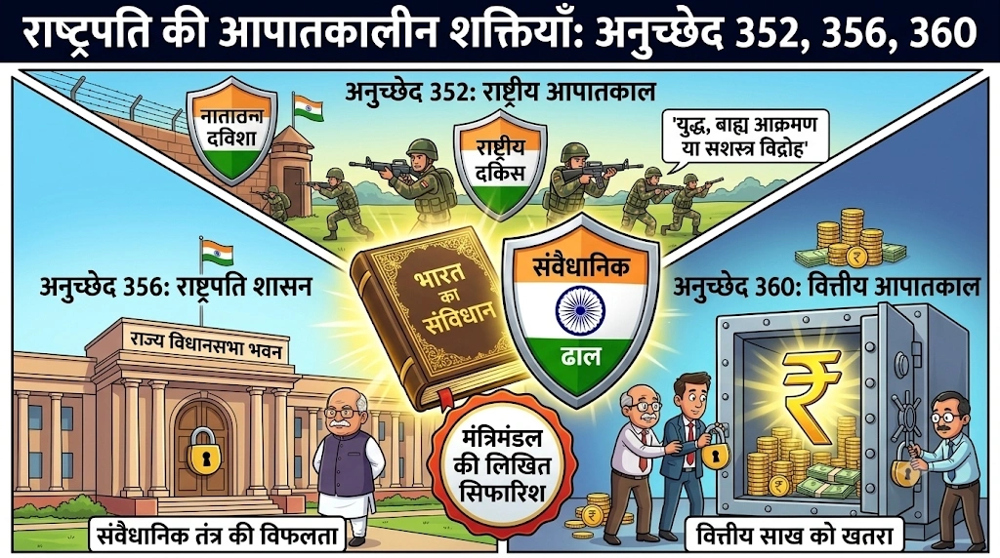
🎨 शिक्षण कार्ड 17: राष्ट्रपति की आपातकालीन शक्तियाँ (अनुच्छेद 352, 356 व 360)
मुख्य बिंदु: अनु. 352 (राष्ट्रीय आपात - युद्ध/बाह्य आक्रमण/सशस्त्र विद्रोह), अनु. 356 (राज्यों में राष्ट्रपति शासन), अनु. 360 (वित्तीय आपातकाल - भारत में कभी नहीं लगा)।
संविधान के अनुच्छेद 72 के तहत भारत के राष्ट्रपति को किसी भी अपराध के लिए दोषी ठहराए गए व्यक्ति के दंड को कम करने, बदलने या माफ करने की संप्रभु न्यायिक शक्ति प्राप्त है:
- दायरा: यह शक्ति संघ सूची के कानूनों के उल्लंघन, सैन्य न्यायालय (Court Martial) द्वारा दिए गए दंड, और मृत्युदंड (Death Sentence) के सभी मामलों में लागू होती है।
- क्षमादान के 5 रूप:
- 1. क्षमा (Pardon): दंड और दोषसिद्धि दोनों को पूर्णतः समाप्त कर देना; व्यक्ति ऐसा हो जाता है मानो उसने अपराध किया ही न हो।
- 2. लघुकरण (Commutation): दंड के स्वरूप को बदलकर कम कठोर दंड देना (उदा. मृत्युदंड को आजीवन कारावास में बदलना)।
- 3. परिहार (Remission): दंड की प्रकृति बदले बिना उसकी अवधि कम करना (उदा. 2 वर्ष के कठोर कारावास को 1 वर्ष में बदलना)।
- 4. विराम (Respite): किसी विशेष परिस्थिति (जैसे गर्भावस्था या गंभीर बीमारी) में मूल दंड को कम करना।
- 5. प्रविलंबन (Reprieve): किसी दंड (विशेषकर मृत्युदंड) पर अस्थाई रोक लगाना ताकि क्षमा या लघुकरण की याचिका पर विचार किया जा सके।
- संवैधानिक नियम: राष्ट्रपति इस शक्ति का प्रयोग केंद्रीय मंत्रिपरिषद (गृह मंत्रालय) की सलाह पर ही करते हैं।
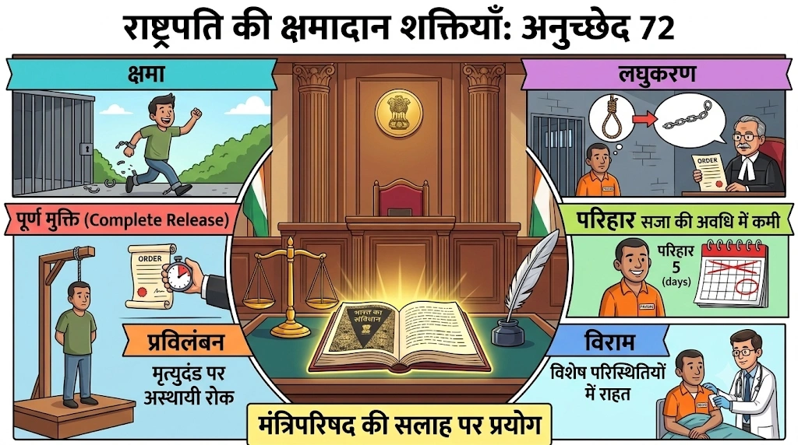
🎨 शिक्षण कार्ड 18: राष्ट्रपति की न्यायिक क्षमादान शक्तियाँ (अनुच्छेद 72)
मुख्य बिंदु: क्षमादान के 5 रूप: क्षमा (Pardon), लघुकरण (Commutation), परिहार (Remission), विराम (Respite) और प्रविलंबन (Reprieve)। मंत्रिपरिषद की सलाह पर प्रयोग।
संविधान का अनुच्छेद 123 राष्ट्रपति को आपात या असाधारण परिस्थितियों में कानून बनाने की असाधारण विधायी शक्ति प्रदान करता है जिसे अध्यादेश (Ordinance) कहते हैं:
- लागू होने की अनिवार्य शर्त: जब संसद का कम से कम एक सदन सत्र में न हो और राष्ट्रपति को विश्वास हो कि तत्काल कानून बनाना अनिवार्य हो गया है।
- संसद के कानून के समान प्रभाव: अध्यादेश को संसद द्वारा पारित अधिनियम के समान ही कानूनी शक्ति और प्रभाव प्राप्त होता है।
- समय सीमा (Life of Ordinance): संसद का सत्र पुनः प्रारंभ होने की तिथि से 6 सप्ताह के भीतर दोनों सदनों द्वारा अध्यादेश अनुमोदित होना अनिवार्य है। यदि अनुमोदित नहीं होता, तो वह स्वतः समाप्त हो जाता है।
- अधिकतम अवधि: चूंकि दो संसद सत्रों के बीच अधिकतम अंतर 6 माह हो सकता है, इसलिए किसी अध्यादेश की अधिकतम अवधि 6 माह + 6 सप्ताह हो सकती है। सर्वोच्च न्यायालय ने (डी.सी. वाधवा केस) यह स्पष्ट किया है कि अध्यादेश का बार-बार पुनः प्रख्यापन संसद की अनदेखी और असंवैधानिक है।
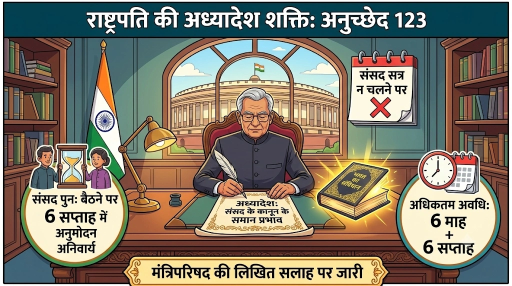
🎨 शिक्षण कार्ड 19: राष्ट्रपति की अध्यादेश निर्माण शक्ति (अनुच्छेद 123)
मुख्य बिंदु: संसद सत्र न चलने पर तत्काल कानून निर्माण, संसद के अधिनियम जैसी कानूनी शक्ति, संसद सत्र शुरू होने के 6 सप्ताह के भीतर अनुमोदन अनिवार्य (अधिकतम अवधि 6 माह + 6 सप्ताह)।
भारत के संघीय ढांचे में राज्यों में कार्यपालिका की संरचना केंद्र के समान ही है। राज्य स्तर पर कार्यपालिका में राज्यपाल (Governor), मुख्यमंत्री और उनकी मंत्रिपरिषद शामिल होते हैं (अनुच्छेद 153-167):
- नियुक्ति और कार्यकाल: राज्यपाल का निर्वाचन नहीं होता; उनकी नियुक्ति राष्ट्रपति द्वारा 5 वर्ष के लिए की जाती है और वे राष्ट्रपति के 'प्रसादपर्यंत' (Pleasure of the President) पद धारण करते हैं।
- राज्यपाल की दोहरी भूमिका:
- 1. राज्य का संवैधानिक व नाममात्र का प्रमुख (समान राष्ट्रपति)।
- 2. केंद्र सरकार के प्रतिनिधि/एजेंट के रूप में कार्य करना जो केंद्र-राज्य संबंधों में सेतु का कार्य करता है।
- विवेकाधीन शक्तियाँ (Discretionary Powers - अनु. 163): राष्ट्रपति की तुलना में राज्यपाल के पास संविधान द्वारा स्पष्ट विवेकाधिकार दिए गए हैं:
- राज्य विधानसभा द्वारा पारित विधेयक को राष्ट्रपति के विचारार्थ सुरक्षित रखना (अनुच्छेद 200)।
- त्रिशंकु विधानसभा में मुख्यमंत्री का चयन और विश्वास मत का समय तय करना।
- राज्य में राष्ट्रपति शासन (अनुच्छेद 356) की सिफारिश राष्ट्रपति को भेजना।
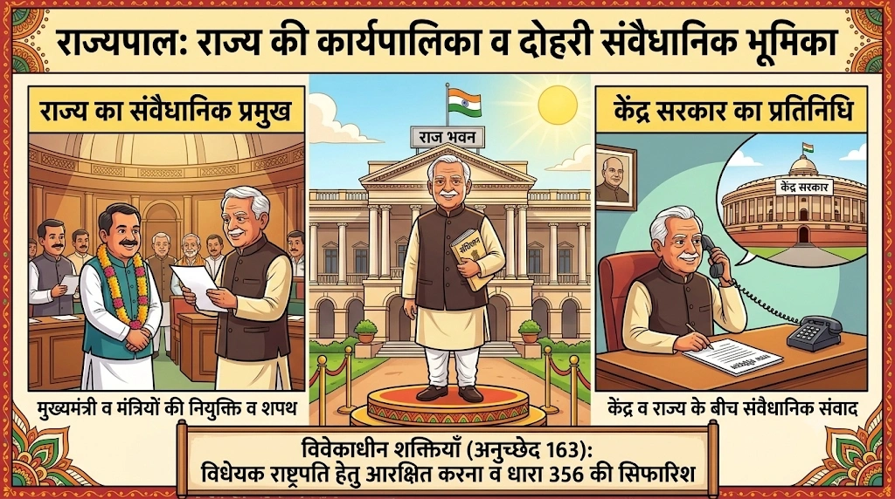
🎨 शिक्षण कार्ड 20: राज्यपाल: राज्य की कार्यपालिका व दोहरी संवैधानिक भूमिका
मुख्य बिंदु: राष्ट्रपति द्वारा नियुक्ति (प्रसादपर्यंत पद), राज्य का संवैधानिक प्रमुख + केंद्र का प्रतिनिधि (दोहरी भूमिका), और अनुच्छेद 163 के तहत महत्वपूर्ण विवेकाधीन शक्तियाँ।
1989 से 2014 तक भारतीय राजनीति में गठबंधन सरकारों (Coalition Governments) का लंबा दौर रहा। इसने प्रधानमंत्री की शक्तियों, कार्यशैली और निर्णय प्रक्रिया को गहराई से प्रभावित किया:
- एकदलीय प्रभुत्व बनाम गठबंधन: एकदलीय पूर्ण बहुमत की सरकारों (जैसे 1971 या 1984) में प्रधानमंत्री की सत्ता सर्वोच्च और वर्चस्वशाली होती थी। परंतु गठबंधन सरकारों में प्रधानमंत्री को विभिन्न दलों के बीच तालमेल बैठाना पड़ता है।
- न्यूनतम साझा कार्यक्रम (Common Minimum Programme - CMP): गठबंधन के सभी घटक दल मिलकर एक साझा एजेंडा तय करते हैं, जिसके आधार पर नीतियां बनती हैं। प्रधानमंत्री अपनी व्यक्तिगत या दलीय प्राथमिकताओं को मनमाने ढंग से नहीं थोप सकते।
- मंत्रियों के चयन में सीमाएं: गठबंधन सरकारों में सहयोगी दल अपने मंत्रालयों का फैसला स्वयं करते हैं। प्रधानमंत्री को महत्वपूर्ण मंत्रालय (जैसे वित्त, गृह, रेल) सहयोगी दलों को देने पड़ते हैं।
- सहमति और मध्यस्थता की कला: गठबंधन युग में प्रधानमंत्री एक 'तानाशाह' या 'अधिनायक' के बजाय एक कुशल मध्यस्थ (Facilitator) और वार्ताकार के रूप में उभरे।
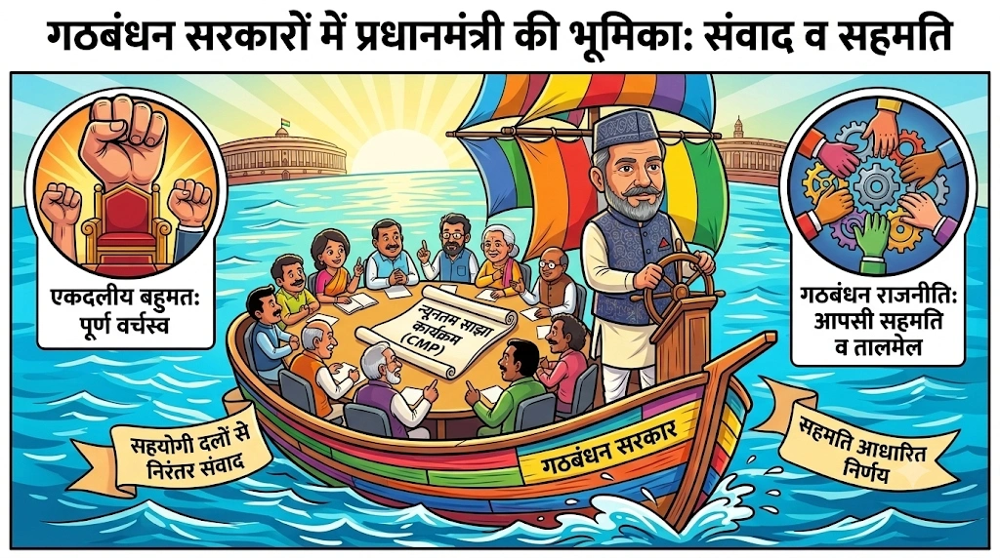
🎨 शिक्षण कार्ड 21: गठबंधन सरकारों में प्रधानमंत्री: संवाद, सहमति व तालमेल
मुख्य बिंदु: एकदलीय पूर्ण बहुमत के वर्चस्व से हटकर न्यूनतम साझा कार्यक्रम (CMP) पर आधारित शासन, सहयोगी दलों से निरंतर विचार-विमर्श और सर्वसम्मति आधारित कार्यशैली।
मंत्रिपरिषद (Council of Ministers) में सभी श्रेणियों के मंत्री शामिल होते हैं। प्रशासनिक दक्षता और कार्यविभाजन की दृष्टि से इसे तीन प्रमुख स्तरों में वर्गीकृत किया गया है:
- 1. कैबिनेट मंत्री (Cabinet Ministers):
- यह मंत्रिपरिषद का सबसे शीर्ष और शक्तिशाली अंग है (लगभग 15 से 20 वरिष्ठतम नेता)।
- महत्वपूर्ण मंत्रालय (गृह, रक्षा, वित्त, विदेश, शिक्षा) इनके अधीन होते हैं। देश के सभी नीतिगत और विधायी निर्णय कैबिनेट बैठकों में ही लिए जाते हैं।
- 2. राज्य मंत्री (Ministers of State - MoS):
- (क) स्वतंत्र प्रभार (Independent Charge): इन्हें किसी मंत्रालय का पूरा प्रभार दिया जाता है, परंतु ये कैबिनेट बैठकों में केवल तभी आमंत्रित किए जाते हैं जब इनके विभाग का विषय हो।
- (ख) कैबिनेट मंत्री के सहायक: बड़े मंत्रालयों में कैबिनेट मंत्री के कार्यभार को साझा करने और सहायता हेतु नियुक्त किए जाते हैं।
- 3. उप-मंत्री (Deputy Ministers):
- ये सबसे निचले स्तर के मंत्री होते हैं। इन्हें कोई स्वतंत्र विभाग नहीं मिलता। ये कैबिनेट या राज्य मंत्रियों को प्रशासनिक, राजनीतिक और संसदीय कार्यों में सहयोग देते हैं।
- किचन कैबिनेट (Kitchen Cabinet / Inner Cabinet): प्रधानमंत्री के 2-4 अत्यंत विश्वसनीय सलाहकारों का एक अनौपचारिक आंतरिक समूह, जहाँ अति-संवेदनशील और त्वरित राष्ट्रीय फैसले अनौपचारिक रूप से पहले तय किए जाते हैं।
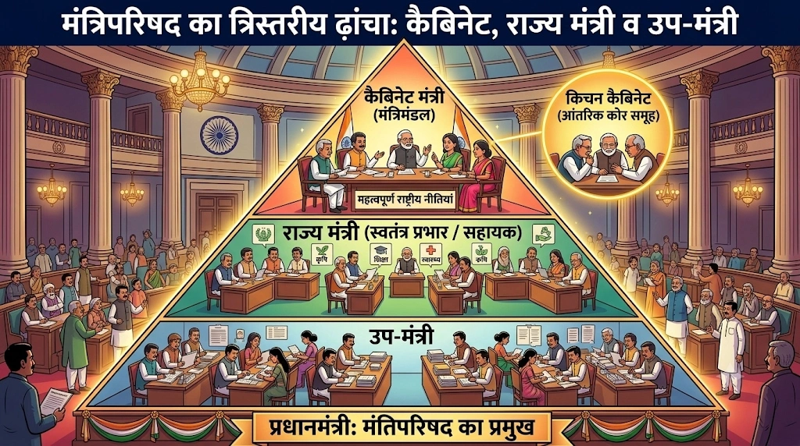
🎨 शिक्षण कार्ड 22: मंत्रिपरिषद का त्रिस्तरीय वर्गीकरण व किचन कैबिनेट
मुख्य बिंदु: कैबिनेट मंत्री (नीति निर्माता शीर्ष कोर), राज्य मंत्री (स्वतंत्र प्रभार या सहायक), उप-मंत्री (प्रशासनिक सहयोगी), और प्रधानमंत्री का आंतरिक कोर 'किचन कैबिनेट'।
संसदीय लोकतंत्र में कार्यपालिका तब तक ही पद पर बनी रह सकती है जब तक उसे लोकसभा का विश्वास प्राप्त है (अनुच्छेद 75(3)):
- अविश्वास प्रस्ताव (No-Confidence Motion):
- यह प्रस्ताव केवल विपक्ष द्वारा केवल लोकसभा में लाया जा सकता है (राज्यसभा में नहीं)।
- प्रस्ताव पेश करने के लिए कम से कम 50 सांसदों का समर्थन अनिवार्य है।
- यदि यह प्रस्ताव लोकसभा में साधारण बहुमत (50% + 1) से पारित हो जाता है, तो संपूर्ण मंत्रिपरिषद सहित प्रधानमंत्री को तत्काल इस्तीफा देना पड़ता है।
- विश्वास मत (Confidence Motion):
- जब राष्ट्रपति किसी नेता को प्रधानमंत्री नियुक्त करते हैं (विशेषकर त्रिशंकु संसद में), तो वे सदन में बहुमत साबित करने के लिए विश्वास मत लाने का निर्देश देते हैं। यह प्रस्ताव सरकार स्वयं लाती है।
- फ्लोर टेस्ट (Floor Test): सदन के पटल पर खुली वोटिंग द्वारा यह तय करना कि सरकार के पास 272+ सदस्यों का जादुई आंकड़ा मौजूद है या नहीं। यदि फ्लोर टेस्ट में सरकार पराजित हो जाए, तो सरकार गिर जाती है।
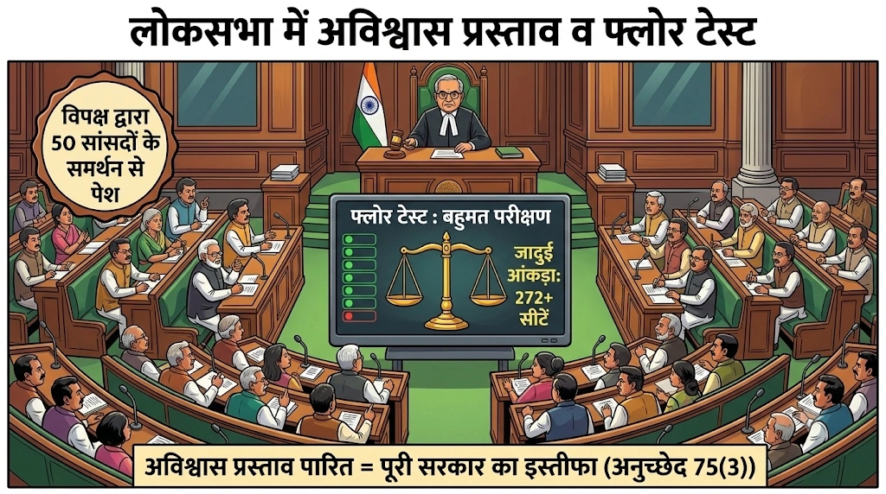
🎨 शिक्षण कार्ड 23: लोकसभा में अविश्वास प्रस्ताव, विश्वास मत व फ्लोर टेस्ट
मुख्य बिंदु: विपक्ष द्वारा 50 सांसदों के समर्थन से केवल लोकसभा में अविश्वास प्रस्ताव, साधारण बहुमत से पास होने पर संपूर्ण सरकार का पतन, और फ्लोर टेस्ट द्वारा शक्ति परीक्षण।
भारतीय संविधान का उद्देश्य एक ऐसी नौकरशाही का निर्माण करना है जो केवल कुछ विशेषाधिकार प्राप्त वर्गों तक सीमित न रहे, बल्कि पूरे भारत की सामाजिक विविधता को प्रतिबिंबित करे:
- संवैधानिक प्रावधान:
- अनुच्छेद 16(4): राज्य को उन पिछड़े वर्गों के लिए सरकारी नौकरियों में आरक्षण देने का अधिकार देता है जिनका प्रशासन में पर्याप्त प्रतिनिधित्व नहीं है।
- अनुच्छेद 335: अनुसूचित जातियों (SC) और अनुसूचित जनजातियों (ST) के दावों को प्रशासनिक दक्षता बनाए रखने के साथ संतुलित करने का निर्देश देता है।
- वर्तमान आरक्षण ढांचा: अनुसूचित जाति (SC - 15%), अनुसूचित जनजाति (ST - 7.5%), अन्य पिछड़ा वर्ग (OBC - 27%), आर्थिक रूप से कमजोर वर्ग (EWS - 10%), तथा दिव्यांगजन और महिलाओं के लिए विशेष अवसर।
- सकारात्मक प्रभाव: आरक्षण नीतियों ने सिविल सेवाओं के पारंपरिक उच्च-वर्गीय और कुलीन चरित्र को तोड़ा है। इससे वंचित और ग्रामीण पृष्ठभूमि के युवाओं को निर्णय लेने की उच्च प्रशासनिक प्रक्रियाओं में सीधी भागीदारी मिली है।
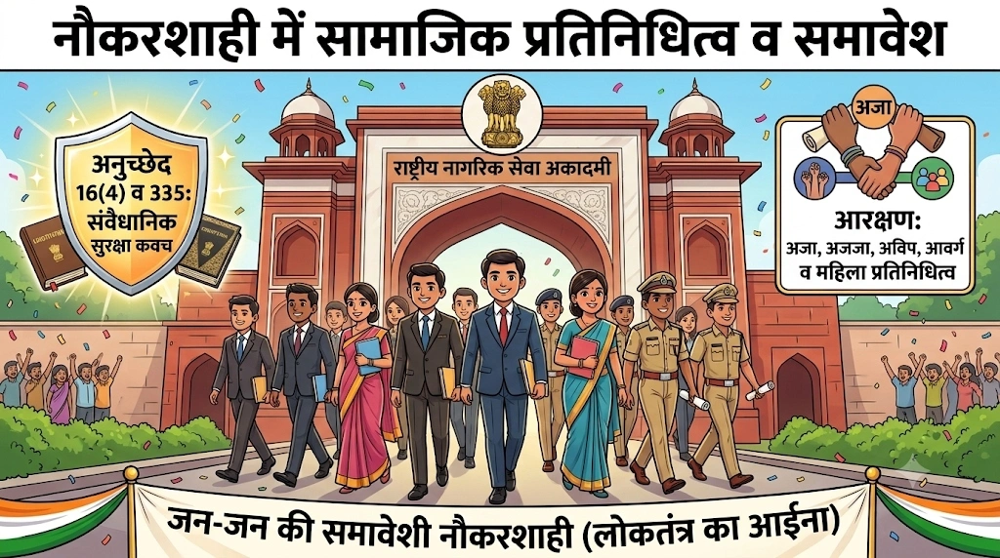
🎨 शिक्षण कार्ड 24: नौकरशाही में सामाजिक प्रतिनिधित्व व समावेशी विकास
मुख्य बिंदु: अनु. 16(4) व 335 के तहत SC, ST, OBC, EWS आरक्षण, लोक प्रशासन में सामाजिक विविधता का समावेश, और कुलीन तंत्र के एकाधिकार को समाप्त करना।
लोकतंत्र में कार्यपालिका को निरंकुश होने से रोकने के लिए संविधान और संसदीय नियमों ने कई शक्तिशाली संस्थागत जांच और नियंत्रण (Checks and Balances) स्थापित किए हैं:
- 1. संसदीय प्रश्नकाल (Question Hour) व शून्यकाल: संसद सत्र के प्रतिदिन पहले घंटे में सांसद मंत्रियों से उनके विभागों के कामकाज पर तीखे तारांकित (Starred) और अतारांकित (Unstarred) प्रश्न पूछते हैं और पूरक प्रश्न भी कर सकते हैं।
- 2. लोक लेखा समिति (Public Accounts Committee - PAC): संसद की सबसे महत्वपूर्ण वित्तीय समिति जो सरकार द्वारा जनता के पैसे के खर्च की गहन जांच करती है। परंपरा के अनुसार इसका अध्यक्ष विपक्ष का नेता होता है ताकि निष्पक्ष जांच सुनिश्चित हो सके।
- 3. नियंत्रक एवं महालेखापरीक्षक (CAG - अनुच्छेद 148): जनता के धन का संवैधानिक संरक्षक (Watchdog of the Public Purse)। CAG केंद्र और राज्य सरकारों के सभी आय-व्यय का ऑडिट कर संसद को रिपोर्ट देता है।
- 4. न्यायिक समीक्षा (Judicial Review): यदि कार्यपालिका का कोई भी आदेश या नीति संविधान या मौलिक अधिकारों के विरुद्ध हो, तो न्यायपालिका (सुप्रीम कोर्ट / हाई कोर्ट) उसे असंवैधानिक घोषित कर रद्द कर सकती है।
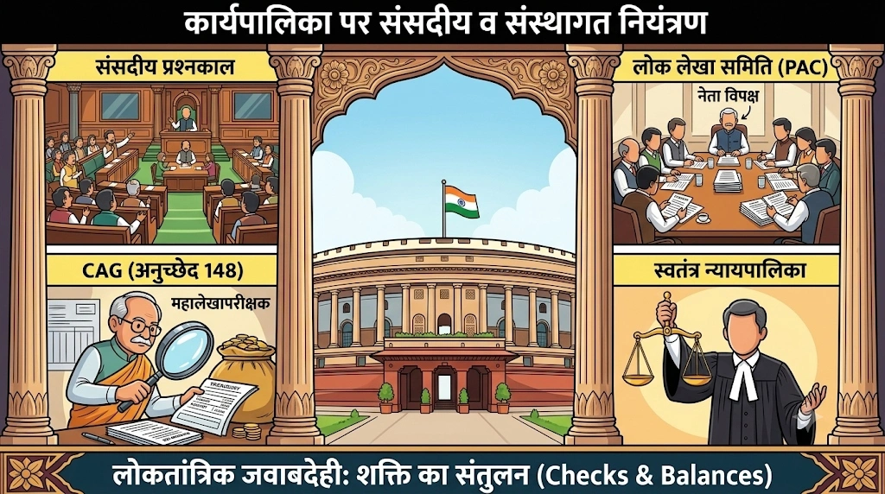
🎨 शिक्षण कार्ड 25: कार्यपालिका पर संसदीय, वित्तीय व न्यायिक नियंत्रण
मुख्य बिंदु: दैनिक नियंत्रण हेतु प्रश्नकाल/शून्यकाल, वित्तीय शुचिता हेतु PAC व CAG (अनुच्छेद 148), और असंवैधानिक निर्णयों को रद्द करने हेतु स्वतंत्र न्यायपालिका की न्यायिक समीक्षा शक्ति।